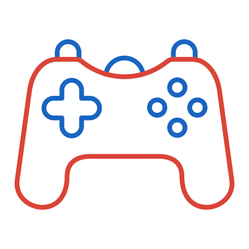

Bem-vindo ao GameRadar! Seu portal de notícias, avaliações e transmissões do universo gamer.
Análises e opiniões sobre os principais jogos.
Transmissões ao vivo dos principais streamers de jogos.
Notícias recentes sobre os jogos mais comentados do momento.